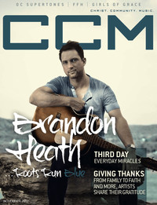

CCM Digital
Nov 2012
| Cover |
|---|
|  |
 Online Exclusively Online Exclusively |
| Writers in this Issue |
| Andy Argyrakis Grace S. Aspinwall Matt Conner Emily Durbin Matt Durbin Andrew Greer Tom Jackson Caroline Lusk Tyrus Morgan Steve Siler Nathan Tasker |
Brandon Heath
Cover Feature:- "Roots Run Deep" by Caroline Lusk
- "Miracles Still Happen" by Caroline Lusk
- "Giving Thanks" by Caroline Luskartist quotes about thanksgiving
- "New music, same passion, and always and only For the Glory" by Caroline Lusk
- "Healed, Grateful, Humble... the way they worship" by Caroline Lusk
Worship:
- "(Worship) Like Never Before" by Emily Durbin
- "Overture for Guitar and Strings"
- VaShawn Mitchell by Andrew Greer
- Disciple by Caroline Lusk
- Smalltown Poets by Matt Conner
- Hyland by Andy Argyrakis
- "Point of Truth: Where Grace and Girls Collide" by Caroline LuskPoint of Grace, Girls of Grace conferences
- "Andy Needham Band" by Andy Argyrakis
- Jonathan Butler by Andy Argyrakis
- "What You "Get" To Do" by Steve Siler
- Seth Mosley by Andrew Greer
- Audio Adrenaline by Andrew Greer
Reviews & New Releases:
- FFH - The Way We Worship by Grace S. Aspinwall
- The Glorious Unseen - Lovesick by Grace S. Aspinwall
- Highlands Worship - Place of Freedom by Andrew Greer
- Avalon - Number Ones by Andy Argyrakis
- Bebo Norman - Lights of Distant Cities by Grace S. Aspinwall
- Jason Castro - Starting Line EP by Andy Argyrakis
- Michael Anthony Milton - When Heaven Came Down by Grace S. Aspinwall
- Third Day - Miracle by Matt Conner
- The Newsboys - Live In Concert: God's Not Dead by Grace S. Aspinwall
- Hyland - Finding Our Way by Andrew Greer
- Project 86 - Wait for the Siren by Andy Argyrakis
- Josh Garrels - Love & War: B-Sides & Remixes by Matt Conner
- Benjamin Dunn - Fable by Matt Conner
- Jonathan Butler - Grace & Mercy by Andy Argyrakis
- KB - Weight & Glory by Andrew Greer
- Freddy Washington - The Jesus Record by Andrew Greer
- The Modern Post - Grace Alone by Matt Conner
- Poema - Remembering You by Matt Conner
- Heather Headley - Only One in the World by Andrew Greer
- Abandoned Pools - Sublime Currency by Andy Argyrakis
- "The King's Men Tour, United Center, Chicago, IL" by Andy Argyrakis
- "Mahelet, A Gift to God" by Tyrus Morgan
- "Start Spreading the News..." by Nathan Tasker
- "The Same Love"
- "Tyranny of the Urgent... or the Important?" by Tom Jackson
© 2011 CMnexus. Last updated August 2025. Contact: editor -AT- cmnexus -DØT- org